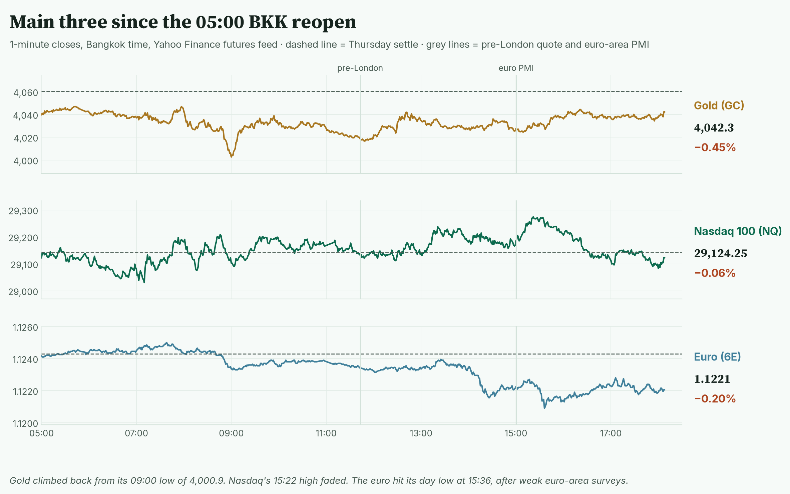
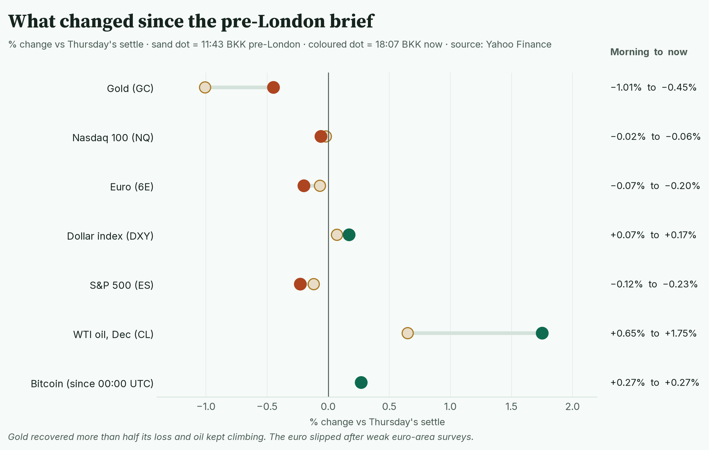
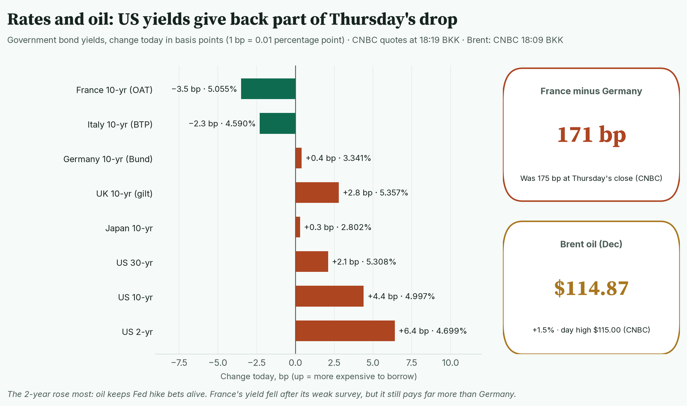
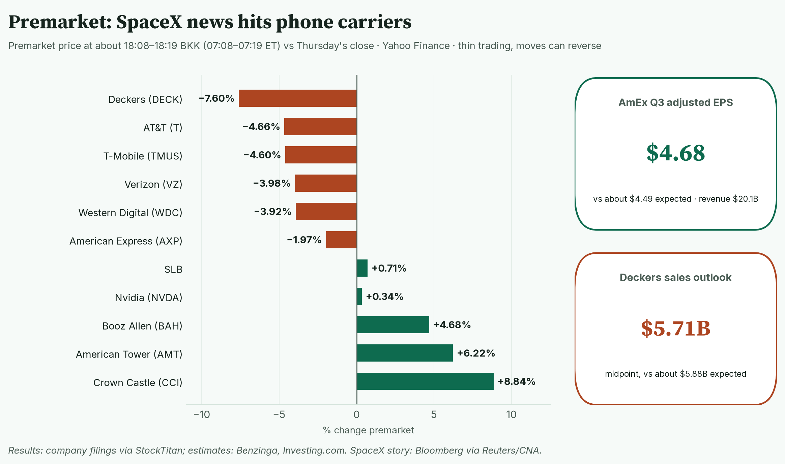
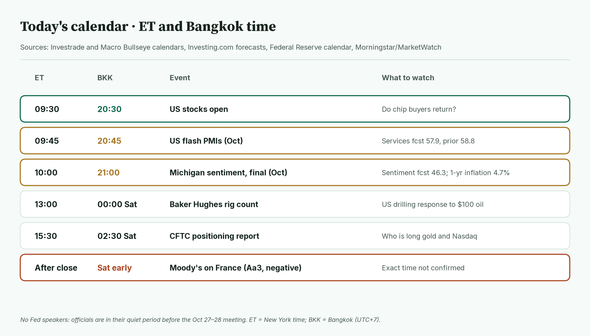
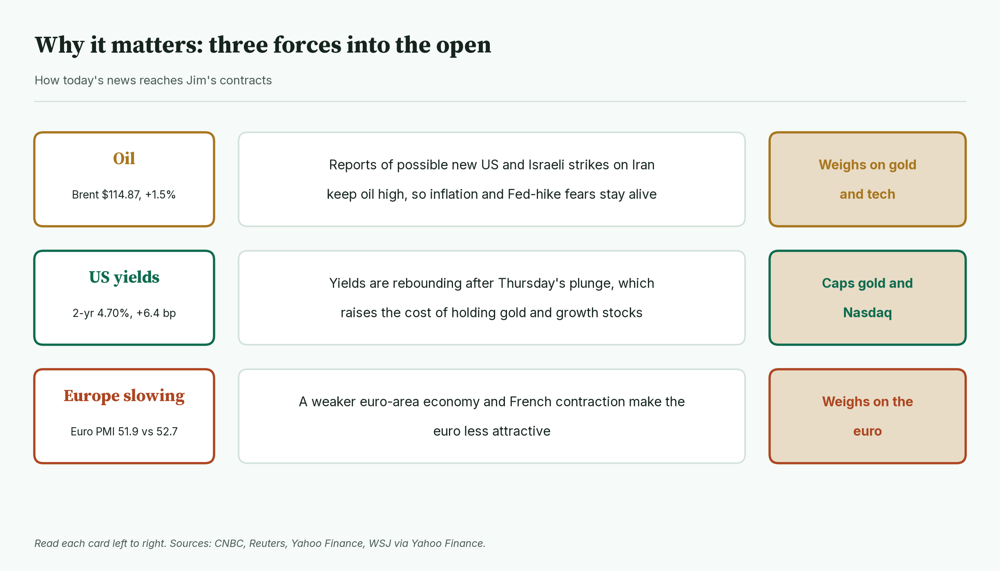
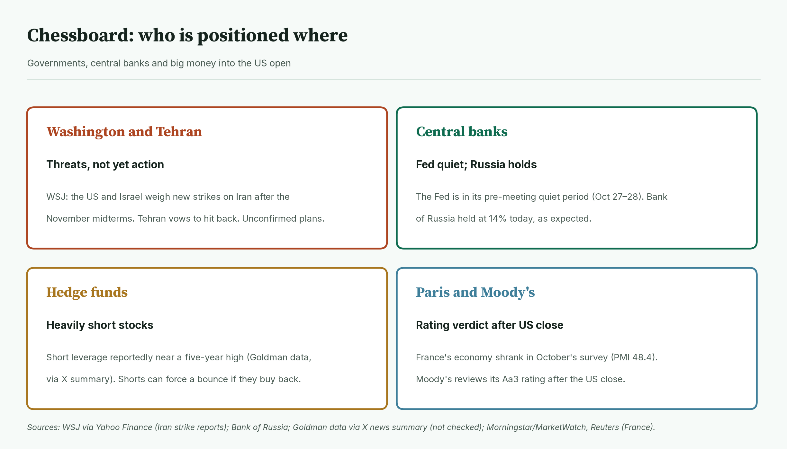
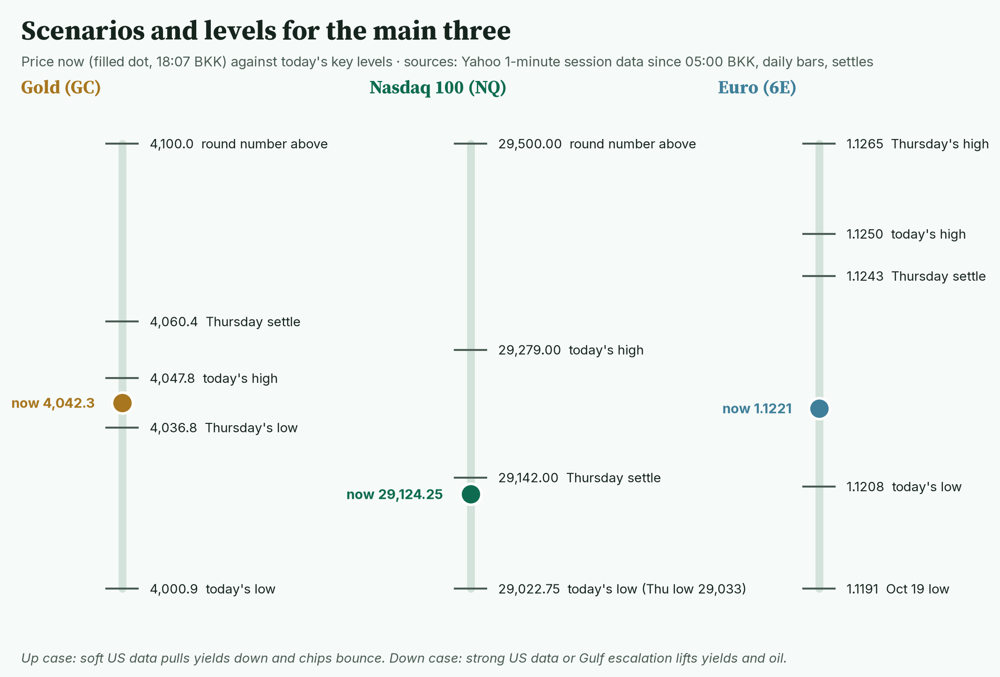
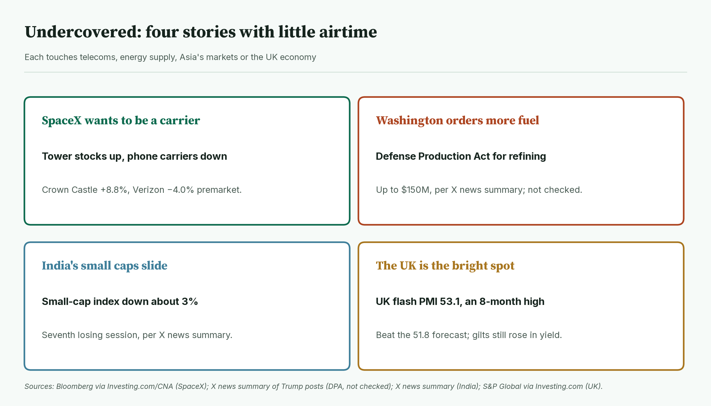
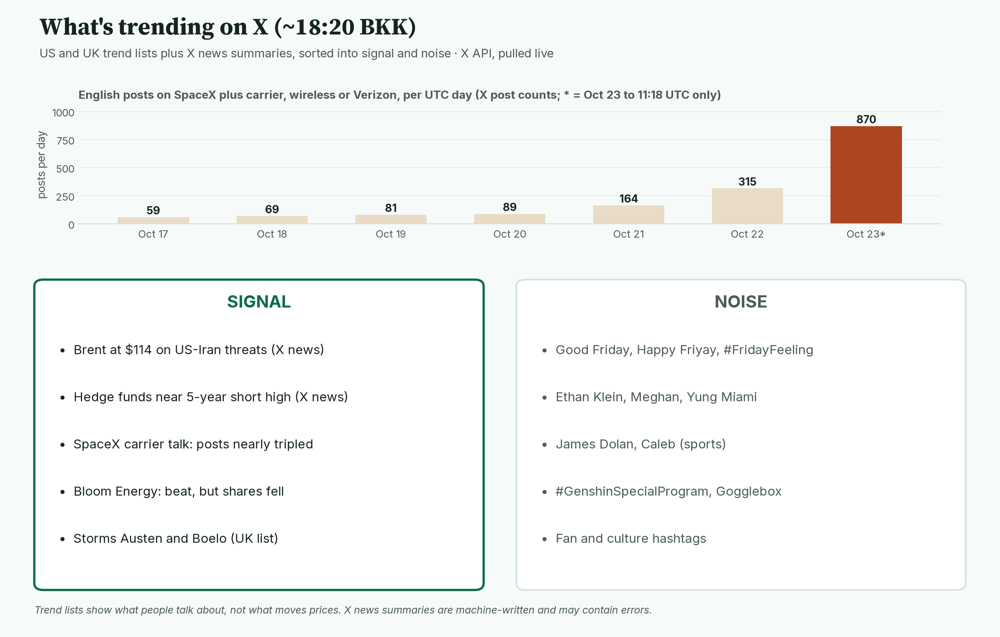

April · Market Intel, pre-NY · Fri Oct 23, 2026 · ~18:20 BKK / ~07:20 New York
Headline: gold won back more than half its morning loss and sits at 4,042.3. Nasdaq futures are flat. The euro slipped to 1.1221 after weak euro-area surveys. Brent oil touched $115.00 on reports of possible new US and Israeli strikes on Iran.
So what: the US flash PMI at 20:45 BKK and Michigan inflation expectations at 21:00 BKK decide whether yields keep rebounding. The US 10-year is at 4.997%, a hair under 5%. Moody's verdict on France lands after the US close.
1) Main instruments The three main contracts on 1-minute bars since the 05:00 BKK reopen. Gold bounced from 4,000.9; the euro set its low after the euro-area PMI. |
(Futures trade nearly around the clock, so they show the mood before stocks open. Quotes: Yahoo Finance futures feed at 18:07 BKK (07:07 New York), about 10 minutes delayed. Ranges: 1-minute bars from the 05:00 BKK reopen to 18:07 BKK; bars are present from 05:00.)
- Gold futures (GC, Dec): 4,042.3, −0.45%, at 18:07 BKK. Driver: dip buyers stepped in at 4,000, but rebounding US yields and high oil cap the bounce.
- Gold's range is 4,000.9 (09:00 BKK) to 4,047.8 (05:42 BKK). CNBC shows the same range.
- Re-checked: the 4,000.9 low broke Thursday's low of 4,036.8, but held above the round 4,000. Gold is now back above Thursday's low.
- Nasdaq 100 futures (NQ, Dec): 29,124.25, −0.06%, at 18:07 BKK. Driver: chip stocks are steady after Thursday's 2.9% drop, but there is no strong bounce.
- Nasdaq's range is 29,022.75 (07:10 BKK) to 29,279.00 (15:22 BKK). The low dipped just under Thursday's low of 29,033. The 15:22 high faded.
- Euro futures (6E, Dec): 1.1221, −0.20%, at 18:07 BKK. Driver: the euro-area economy slowed more than expected, and France shrank.
- The euro's range is 1.1208 (15:36 BKK) to 1.1250 (07:38 BKK). Spot euro is 1.1197, −0.22% (Yahoo, 18:17 BKK).
- Takeaway: gold recovered, Nasdaq is waiting, and the euro is the weak one since London opened.
Context. The dollar index (DXY, the dollar against six major currencies) is 101.78, +0.17% (Yahoo, 18:07 BKK). The US 10-year yield (what the US government pays to borrow for 10 years) is 4.997%, up 4.4 basis points (CNBC, 18:17 BKK; a basis point is 0.01 percentage point). It is clawing back part of Thursday's 19 bp drop. The VIX (the "fear gauge" built from S&P 500 option prices) is 19.75, +3.78% versus Thursday's close (Cboe via Yahoo, 18:02 BKK). US oil (CL, Dec) is 101.21, +1.75% (18:07 BKK), with a range of 98.84 (05:39 BKK) to 101.35 (18:05 BKK). Brent (Dec) is 114.87, +1.50% (CNBC, 18:09 BKK), with a range of 112.74 to 115.00 (CNBC session figures; times not given). S&P 500 futures (ES) are 7,686.75, −0.23% at 18:07 BKK, with a range of 7,678.00 (17:53 BKK) to 7,714.25 (05:24 BKK). Bitcoin is $81,534, +0.27% since 00:00 UTC (Yahoo, 18:17 BKK).
2) Top signals: what changed since pre-London Each line runs from the 11:43 BKK reading to 18:07 BKK. Gold and oil rose; the euro and S&P futures slipped. |
- Europe slowed. Euro-area composite PMI 51.9 vs 52.7 expected. (High: Reuters, S&P Global)
- France shrank. French composite PMI 48.4; below 50 means contraction. (High: Reuters)
- Oil hit $115. WSJ reports the US and Israel weigh new Iran strikes after the midterms. (Medium: WSJ via Yahoo Finance; plans unconfirmed)
- SpaceX shook telecoms. Verizon, AT&T and T-Mobile fell about 4% premarket. (High: Bloomberg via CNA)
- Takeaway: Europe's slowdown hit the euro; Gulf risk kept oil and yields up.
3) Rates, FX and oil Change in 10-year and other government yields today, CNBC at 18:19 BKK. US yields are rebounding; France's and Italy's fell after weak surveys. |
- US 2-year 4.699%, +6.4 bp. 10-year 4.997%, +4.4 bp. 30-year 5.308%, +2.1 bp (CNBC, 18:19 BKK).
- Mentor: the 2-year tracks Fed expectations. It rising most means traders are putting rate-hike bets back on.
- France minus Germany 10-year gap: 171 bp at 18:19 BKK, down from 175 bp at Thursday's close (CNBC). France's 10-year is 5.055%.
- The UK beat. UK flash composite PMI 53.1 vs 51.8 expected, an eight-month high (S&P Global via Investing.com). UK retail sales fell 0.4% in September (ONS).
- Bank of Russia held at 14%, as expected (Bank of Russia).
- The yen is 156.91 per dollar (Yahoo, 18:17 BKK), little changed.
- Oil: WTI is up 1.75% and Brent 1.5%. Iran says it will retaliate against any new strike (WSJ via Yahoo Finance).
- Takeaway: higher oil is pushing short-term US yields back up, which is the main headwind for gold.
4) Premarket earnings Premarket moves at about 18:08–18:19 BKK versus Thursday's close (Yahoo). Phone carriers and Deckers fall; tower owners jump. |
- American Express: −2.0%. Adjusted EPS $4.68 vs about $4.49 expected; revenue $20.1B, in line. It raised its full-year adjusted EPS guide to $17.60–17.90. (Medium: company 8-K via StockTitan; estimate via Benzinga)
- SLB: +0.7%. Adjusted EPS $0.64 vs $0.61 expected; revenue $9.45B vs $9.28B. (Medium: 8-K via StockTitan; Benzinga)
- Deckers: −7.6%. Sales missed and it cut its yearly sales outlook to about $5.71B (midpoint). (High: Investing.com)
- SpaceX effect: Crown Castle +8.8% and American Tower +6.2%; Verizon −4.0%, T-Mobile −4.6%, AT&T −4.7%. Bloomberg reported SpaceX wants cell sites for a nationwide wireless service.
- Chips are steady: Nvidia +0.3%, AMD +0.7%, Micron +1.1%. Meta is −0.6%.
- Takeaway: earnings are not the story; AI chips and the SpaceX telecom shock are.
5) US calendar today (ET and BKK) Friday's US schedule in New York and Bangkok time. The two data releases come 15 minutes apart. |
- 09:30 ET / 20:30 BKK: US stocks open.
- 09:45 ET / 20:45 BKK: US flash PMIs. Services forecast 57.9, prior 58.8; manufacturing forecast 55.4, prior 55.9 (Investing.com).
- 10:00 ET / 21:00 BKK: Michigan sentiment, final. Forecast 46.3. One-year inflation expectations forecast 4.7% (Investing.com).
- 13:00 ET / 00:00 Sat BKK: Baker Hughes rig count.
- 15:30 ET / 02:30 Sat BKK: CFTC positioning report (weekly data on who holds which futures).
- After the US close (early Saturday BKK): Moody's on France. Exact time not confirmed.
- No Fed speakers: the Fed is in its quiet period before the Oct 27–28 meeting (Federal Reserve calendar).
- Takeaway: 20:45 and 21:00 BKK are the deciders.
6) Why it matters Three forces and how each reaches the main contracts. |
- Oil sets the rate mood. Higher oil means higher prices, so traders bet the Fed may need to hike.
- Gold pays no interest. When yields rise, holding gold costs more in lost interest.
- Nasdaq's growth stocks are also hurt by higher yields, because future profits are worth less today.
- The euro weakens when Europe's economy slows faster than America's.
- Takeaway: a hot US inflation reading would hit gold and Nasdaq together.
7) Chessboard Who is acting or positioned into the US open. Gulf and France carry the weekend risk. |
- Washington and Tehran: WSJ reports possible new US and Israeli strikes after the November midterms. Tehran vows to retaliate. (Medium: WSJ via Yahoo Finance; not confirmed)
- The Fed: silent before Oct 28. Thursday's markets priced about 85% odds of a December hike (Reuters, as reported this morning; not re-checked).
- Hedge funds: short leverage (bets on falling prices, using borrowed money) is reportedly near a five-year high. If prices rise, they may have to buy back, which can force a bounce. (Low-medium: Goldman data via X news summary; not checked against Goldman)
- Paris: France's PMI shows contraction. Moody's reviews its Aa3 rating, on negative outlook; analysts expect a one-notch cut. (Medium: Morningstar/MarketWatch)
- Takeaway: crowded short bets plus weekend risk can make Friday moves sharp in either direction.
8) Scenarios and levels Price now against today's key levels. Gold sits between Thursday's low and today's high. |
- Up case: soft US PMI and lower inflation expectations pull yields back below 4.95%. Gold retests 4,060.4, Thursday's settle. Nasdaq clears 29,279.00. The euro gets back above 1.1243.
- Down case: strong data or Gulf escalation lifts the 10-year above 5.00%. Gold slips back under 4,036.8 and tests 4,000.9. Nasdaq breaks 29,022.75. The euro breaks 1.1208 and eyes the Oct 19 low of 1.1191.
- Takeaway: 5.00% on the US 10-year is today's line in the sand. This is a framework, not a forecast.
9) Undercovered Four stories with little airtime. Two are confirmed by news reports; two come from X summaries only. |
- SpaceX wants to be a phone carrier. It is reportedly seeking cell sites across the US. (High: Bloomberg via Investing.com and CNA)
- Washington ordered more fuel. Trump invoked the Defense Production Act, with up to $150M for refining. (Low-medium: X news summary; not checked)
- India's small caps fell about 3%, their seventh losing session. (Low-medium: X news summary)
- The UK is the bright spot. Its PMI hit an eight-month high, yet gilt yields still rose. (High: S&P Global, CNBC)
10) What's trending on X (~18:20 BKK) Daily English posts on SpaceX and carriers, plus today's trends sorted into signal and noise. Posts went from 315 on Oct 22 to 870 by 11:18 UTC today. |
- US: Good Friday, Ethan Klein, RED Friday, James Dolan, Caleb, Hebron.
- UK: Meghan, #StormAusten, Storm Boelo, Wes Streeting, Gogglebox.
- Signal: X news stories lead with Brent at $114 on US-Iran threats and the hedge fund short build-up. (Medium: X news summaries)
- Signal: Bloom Energy beat estimates but its shares fell in late trading. It is another sign investors doubt AI-power spending. (Medium: X news summary)
- Data point: SpaceX-carrier posts nearly tripled today (X post counts).
- Noise: Friday greetings, celebrity names, sports and game streams.
Bottom line
Europe is slowing, oil is rising, and US yields are creeping back toward 5%. For Jim: gold must stay above 4,036.8 to keep its rebound alive; 4,000.9 is the floor. Nasdaq is flat at 29,124.25 and needs 29,279.00 to show buyers. The euro is near its low; 1.1208 is the line. Interpretive note: with hedge funds heavily short and weekend risk from Iran and Moody's, intraday swings could be large. That is a read, not a forecast.
Confidence: Futures levels: high for direction, medium-high for the exact tick (Yahoo feed, ~10 min delayed; gold range matches CNBC). Yields and Brent: CNBC, time-stamped. PMIs: high (Reuters, S&P Global, FXStreet). Earnings figures: medium (8-K summaries via StockTitan; estimates vary by source). Iran strike plans: reported by WSJ, unconfirmed. Moody's timing: after the close, exact hour unconfirmed. Hedge fund shorts, Defense Production Act and India figures: low-medium (X news summaries). Brent session times: not available (Yahoo's Brent series rolled to the January contract at 14:31 BKK, so CNBC's December figures are used).
Charts: /workspace/april-charts/2026-10-23/pre-ny-{scoreboard,main3,delta,rates,earnings,calendar,why,chess,scenarios,under,xsplit}.png |